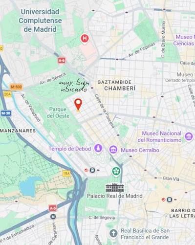
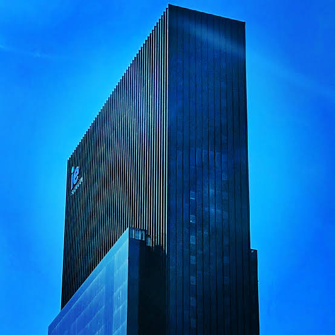
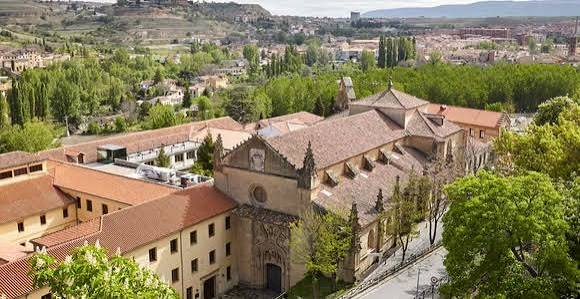
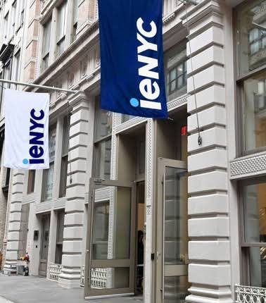
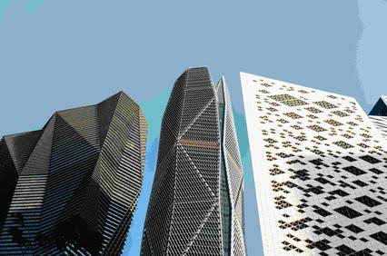

Tanto la IE, como ICADE como el CEU permiten conseguir una titulación en Adminsitración y dirección de empresas. A pesar de que el objetivo final sea el mismo, no tdas duran lo mismo, ni se imparten en el mismo idioma ni en el mismo ambiente.
Además, las salidas laborales varían, ya que durante la carrera las unviersidades permiten acceder a distintos puestos de trabajo que ya es decisión del estudiante si quedarse o buscar otro más general.
De la misma manera, aunque las 3 sean privadas, la manera de acceder varía, al igual que los requisitos antes, durante y después del periodo universitario
El campus de ICADE está integrado en el centro de Madrid, con un modelo de campus urbano repartido en varias sedes y edificios históricos y modernos, en lugar de un único campus aislado a las afueras.

| Ciudades | Descripción | Explora | Imagen |
|---|---|---|---|
| Madrid | La IE Tower, el campus vertical donde estudian los alumnos de grado, y María de Molina, hogar de la mayoría de los programas de máster. Ambos se ubican en el centro de una de las capitales de negocios más activas de Europa, de modo que la ciudad misma se convierte en parte del aula. | Explora el campus |  |
| Segovia | Santa Cruz la Real, un convento del siglo XIII restaurado y reconvertido en un moderno campus a 30 minutos de Madrid en AVE. Ocho siglos de historia, reconstruidos en torno a cómo aprenden los estudiantes hoy. | Explora el campus |  |
| Nueva York - IE NEW YORK COLLEGE (IENYC) | IE New York College (IENYC). IE University es la única propietaria de IE New York College, una universidad estadounidense independiente y sin ánimo de lucro que ofrece másteres especializados en el corazón del SoHo. Es el ancla transatlántica de este viaje de IE University. | Explora el campus |  |
| ORIENTE MEDIO — IE CENTER FOR LEADERSHIP & INNOVATION IN THE MIDDLE EAST. | Nuestro centro regional de educación ejecutiva, emprendimiento e innovación creativa, ubicado en el Creative District de Riad, donde IE University trabaja junto a los líderes que están transformando la región. | Explora el campus |  |